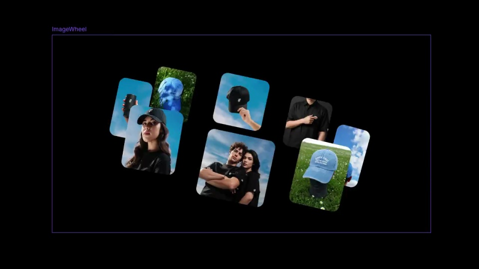
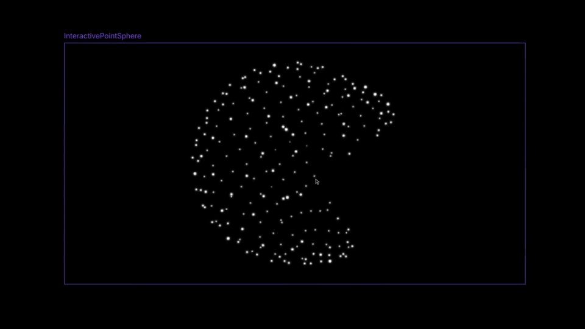
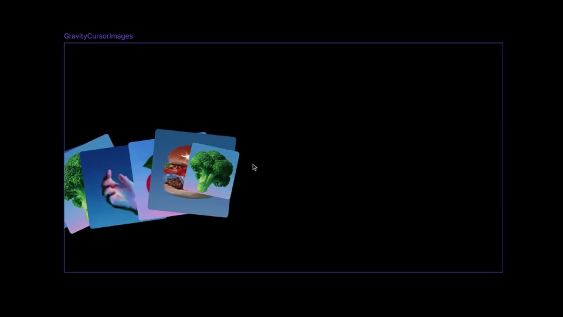
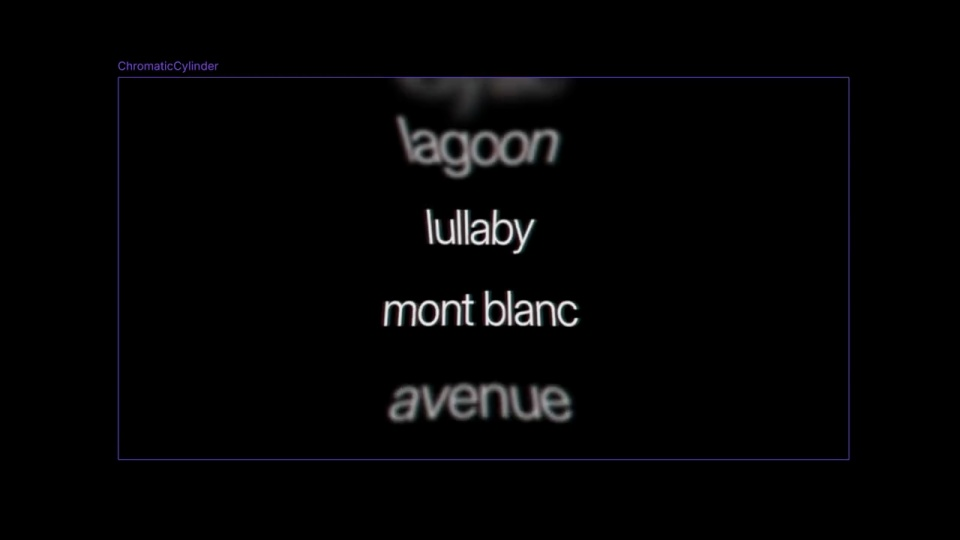
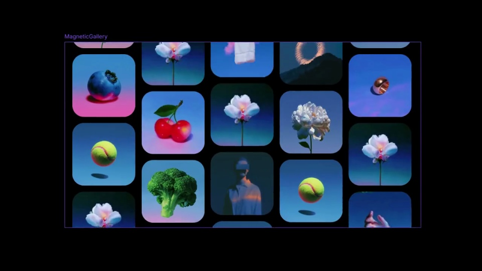

Framer / V339
紫框中的五个组件
固定紫色描边与组件名称，使五段快速演示看起来属于同一套工具。每次切换只更换内部对象，不移动展示舞台。
构图与编排 可播放 · 可替换内容
整体编排规则示例
查看 HTML 源码
<!doctype html><html lang="zh-CN"><meta charset="utf-8"><meta name="viewport" content="width=device-width,initial-scale=1"><title>紫框中的五个组件 · sequence</title><style>html,body{margin:0;width:100%;height:100%;overflow:hidden;background:#000000}canvas{display:block;width:100%;height:100%;object-fit:contain}</style><body data-mode="sequence"><canvas width="1000" height="600"></canvas><script src="data.js"></script><script src="common.js"></script><script src="scene.js"></script><script src="bridge.js"></script></body></html>画面元素固定紫色画布边界粒子球图片拖尾文字滚筒磁吸网格
MOTION LANGUAGE
动作与构图
局部动作 · 构图规则
01
外框不动，连续换五种运动
固定紫色描边与组件名称，使五段快速演示看起来属于同一套工具。每次切换只更换内部对象，不移动展示舞台。
02
拖尾与滚筒用不同的运动规则
拖尾与滚筒用不同的运动规则规则示例
查看 HTML 源码
<!doctype html><html lang="zh-CN"><meta charset="utf-8"><meta name="viewport" content="width=device-width,initial-scale=1"><title>紫框中的五个组件 · sequence</title><style>html,body{margin:0;width:100%;height:100%;overflow:hidden;background:#000000}canvas{display:block;width:100%;height:100%;object-fit:contain}</style><body data-mode="clip" data-start="1" data-end="2.9"><canvas width="1000" height="600"></canvas><script src="data.js"></script><script src="common.js"></script><script src="scene.js"></script><script src="bridge.js"></script></body></html>图片沿弧线依次追随并叠压；文字则围绕水平轴纵向滚动，中央清楚，上下逐渐模糊变小。两者不要共享同一种平移。
03
用规整网格结束
最后把图片组织成连续上下滑动的圆角网格，较前面的散开状态更整齐。迁移时替换图片组与词库，保留五种机制的对比。
SEQUENCE
段落与节奏
点击段落，定位到上方编排示意。





画面参考 · 离散静帧
KEEP THE RELATIONSHIPS
制作其他主题
- 可以替换图片与词组，但轮盘、球面、拖尾、滚筒、网格应保持不同拓扑。
制作约束
固定紫色画布边界 / 粒子球 / 图片拖尾 / 文字滚筒 / 磁吸网格
- 固定紫色描边与组件名称，使五段快速演示看起来属于同一套工具。每次切换只更换内部对象，不移动展示舞台。
- 图片沿弧线依次追随并叠压；文字则围绕水平轴纵向滚动，中央清楚，上下逐渐模糊变小。两者不要共享同一种平移。
- 最后把图片组织成连续上下滑动的圆角网格，较前面的散开状态更整齐。迁移时替换图片组与词库，保留五种机制的对比。